The purpose of this tutorial is to show how to use oomph-lib's FSI preconditioner for the efficient monolithic solution of fluid-structure interaction problems. We illustrate the use of the preconditioner for the collapsible channel problem described in the tutorial demonstrating the use of oomph-lib's segregated FSI solver. The test problem used is discussed in detail in
where we contrast the relative performance of segregated and monolithic solvers.
Theory
The monolithic discretisation of fluid-structure interaction problems in which the fluid node-update in response to changes in the wall shape is performed by one of oomph-lib's algebraic node update techniques (such as the ones implemented in the AlgebraicMesh and MacroElementNodeUpdateMesh classes; see the relevant tutorials for a discussion of the algebraic and macro-element-based node update techniques) leads to Jacobian matrices that contain three types of degree of freedom, namely the fluid velocities, the fluid pressures, and the solid mechanics degrees of freedom.
oomph-lib's FSI preconditioner employs the library's block-preconditioning framework to (formally) re-order the linear system to be solved during the Newton iteration into 3x3 blocks. We note that all fluid velocity components and all solid degrees of freedom are treated as single blocks of unknowns. The linear system therefore has the following block structure
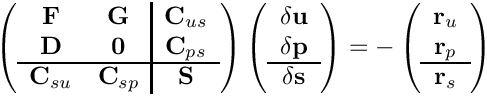
Here the on-diagonal block matrices
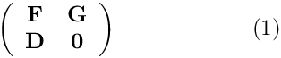
and
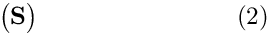
are the Jacobian matrices from the corresponding single-physics (fluid and solid) problems. The off-diagonal matrix blocks 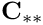 arise from the interaction between fluid and solid equations: 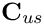 and 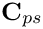 contain the so-called `‘shape derivatives’' — the derivatives of the Navier–Stokes residuals with respect to the solid displacements that affect the nodal positions in the fluid mesh. Similarly, 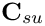 and  contain the derivatives of the solid residuals with respect to the fluid variables; this interaction arises through the fluid loading on the wall.
contain the derivatives of the solid residuals with respect to the fluid variables; this interaction arises through the fluid loading on the wall. oomph-lib's algebraic node-update strategy ensures that the interaction matrices are very sparse. The maximum fill level for the examples presented in Heil, Hazel & Boyle's (2008) paper is about 3% and such (relatively) large values only arose in computations with very coarse meshes; the much finer meshes used in typical production runs resulted in much sparser matrices.
We showed in an earlier paper [ Heil, M. "An efficient solver for the fully-coupled solution of large-displacement fluid-structure interaction problems". Computer Methods in Applied Mechanics and Engineering 193, 1-23, (2004)] that the use of block-triangular approximations to the global Jacobian matrix, obtained by neglecting the fluid-solid or solid-fluid interaction blocks,
![\[ {\cal P}_1 = \left( \begin{array}{cc|c} {\bf F} & {\bf G} & {\bf 0} \\ {\bf D} & {\bf 0} & {\bf 0} \\ \hline {\bf C}_{su} & {\bf C}_{sp} & {\bf S} \end{array} \right) \mbox{\ \ and \ \ } {\cal P}_2 = \left( \begin{array}{cc|c} {\bf F} & {\bf G} & {\bf C}_{us} \\ {\bf D} & {\bf 0} & {\bf C}_{ps} \\ \hline {\bf 0} & {\bf 0} & {\bf S} \end{array} \right) \mbox{\ \ and \ \ } {\cal P}_3 = \left( \begin{array}{cc|c} {\bf F} & {\bf G} & {\bf 0} \\ {\bf D} & {\bf 0} & {\bf 0} \\ \hline {\bf 0} & {\bf 0} & {\bf S} \end{array} \right) \]](form_8.png)
in the Newton method seriously degrades its performance, resulting in the loss of its quadratic convergence and thus one of its the most attractive features. However, the block-triangular approximations were shown to be excellent preconditioners for the solution of the linear system by Krylov subspace methods. Because of their block-triangular structure, each application of the preconditioners involves linear solves with each of the two single-physics systems (1) and (2), and matrix-vector products with the retained interaction matrices.
The current implementation of the FSI preconditioner within oomph-lib employs Elman, Silvester & Wathen's `‘least squares commutator’' (LSC) preconditioner, discussed in another tutorial to approximately solve the linear system involving the fluid matrix (1).
An example
To demonstrate how to use the preconditioner, here are the relevant extracts from the driver code fsi_chan_precond_driver.cc which solves the collapsible channel problem discussed in another tutorial. As explained in the Linear Solvers Tutorial switching to an iterative linear solver is typically performed in the Problem constructor and involves a few straightforward steps:
- Create an instance of the IterativeLinearSolver and pass it to the Problem
We create an instance ofGMRES,
// Build iterative linear solverGMRES<CRDoubleMatrix>* iterative_linear_solver_pt =new GMRES<CRDoubleMatrix>;
set the maximum number of iterations to 100, and increase the GMRES convergence tolerance to 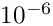 as experiments showed this to give the fastest overall solve times; see Further comments and exercises.
// Set maximum number of iterationsiterative_linear_solver_pt->max_iter() = 100;// Set toleranceiterative_linear_solver_pt->tolerance() = 1.0e-6;
Finally, we pass the pointer to the iterative linear solver to the problem.
this->linear_solver_pt()=iterative_linear_solver_pt;
- Create an instance of the Preconditioner and pass it to the IterativeLinearSolver
We start by creating an instance of the FSI preconditioner.
// Create an instance of the FSI preconditioner -- pass the pointer// to the problem
Next we identify the meshes that contain the fluid and solid elements – this information is required byoomph-lib'sblock-preconditioning framework to identify the types of the various degrees of freedom in the Jacobian matrix. Identifying the fluid elements is straightforward as they are already contained in a distinct (sub-)mesh, accessible via the member functionbulk_mesh_pt():
TheFSIHermiteBeamElementelements used for the discretisation of the flexible channel wall are also contained in their own (sub-)mesh, accessible via the member functionwall_mesh_pt(). If displacement control is used, theDisplacementControlElementintroduces a further unknown into the problem: the adjustable external pressure; see the brief discussion of this in another tutorial. We classify the external pressure as a solid mechanics degree of freedom and therefore add theDisplacementControlElementto a combined solid mesh (constructed from a vector of pointers to its constituent sub-meshes):
// Build a compound mesh that contains all solid elements:// Create a vector of pointers to submeshes. Start with the solid// mesh itself.Vector<Mesh*> s_mesh_pt(1);s_mesh_pt[0]=this->wall_mesh_pt();// Add the displacement control mesh if requiredif (this->Displ_control){s_mesh_pt.push_back(this->Displ_control_mesh_pt);}// Build compound mesh from vector of solid submeshesMesh* combined_solid_mesh_pt = new Mesh(s_mesh_pt);
Finally, we pass the pointer to the combined solid mesh to the FSI preconditioner to identify the solid degrees of freedom (the optional boolean flag indicates that we allow the mesh to contain multiple element types):
// Set solid mesh and tolerate multiple element types this is mesh.prec_pt->set_wall_mesh(combined_solid_mesh_pt,true);
The preconditioner is now fully functional and we pass
a pointer to it to the preconditioner:
// Pass preconditioner to iterative linear solveriterative_linear_solver_pt->preconditioner_pt()= prec_pt;
- Customise the Preconditioner (if required)
TheFSIPreconditionerallows preconditioning to be performed with either one of the three block-triangular approximations to the Jacobian:
- The lower-triangular block preconditioner 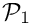 which retains the interaction matrices 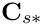 that represent the effect of the fluid onto the solid:
// Choose preconditioner that retains fluid on solid termsprec_pt->use_block_triangular_version_with_fluid_on_solid();
- The upper-triangular block preconditioner 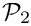 which retains the interaction matrices 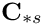 that represent the effect of the solid onto the fluid:
// Choose preconditioner that retains solid on fluid termsprec_pt->use_block_triangular_version_with_solid_on_fluid();
- The block-diagonal block preconditioner 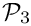 which suppresses all the interaction matrices:
// Use block-diagonal preconditionerprec_pt->use_block_diagonal_version();
oomph-lib'sLeast-Squares-Commutator Navier-Stokes preconditionerNavierStokesLSCPreconditioner, discussed in another tutorial. The behaviour of this (sub-)preconditioner may be customised too. For instance, to employ theHypreAMG solver to solve the linear systems involving the pressure Schur complement matrix in the
in the NavierStokesLSCPreconditioner, we use the procedure discussed earlier:
#ifdef OOMPH_HAS_HYPRE//If we are using MPI, then only use HYPRE if it has been initialised#ifdef OOMPH_HAS_MPIif(MPI_Helpers::mpi_has_been_initialised())#endif{// By default, the LSC Preconditioner uses SuperLU as// an exact preconditioner (i.e. a solver) for the// momentum and Schur complement blocks.// Can overwrite this by passing pointers to// other preconditioners that perform the (approximate)// solves of these blocks.// Create internal preconditioners used on Schur blockHyprePreconditioner* P_matrix_preconditioner_pt =new HyprePreconditioner;// Set defaults parameters for use as preconditioner on Poisson-type// problemHypre_default_settings::set_defaults_for_2D_poisson_problem(P_matrix_preconditioner_pt);// Use Hypre for the Schur complement blockprec_pt->navier_stokes_preconditioner_pt()->set_p_preconditioner(P_matrix_preconditioner_pt);// Shut upP_matrix_preconditioner_pt->disable_doc_time();}#endif // endif for we have hypre... - The lower-triangular block preconditioner 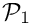 which retains the interaction matrices 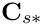 that represent the effect of the fluid onto the solid:
Further comments and exercises
- The convergence tolerance for the iterative linear solver
Since the iterative linear solver operates within an "outer" (Newton) iteration it has occasionally been suggested to adjust the convergence tolerance for the iterative linear solver, depending on the progress of the "outer" (Newton) iteration: The idea is that there is little point in "over-solving" the linear system (i.e. solving it to very high precision) if the Newton method is still "far" from converged. (Only) during the final stages of the Newton iteration is an accurate solution of linear systems essential, otherwise the Newton iteration stagnates. This idea can be made rigorous (see, e.g., R.S. Dembo, S.C. Eisenstat and T. Steilhaug "Inexact Newton methods" SIAM J. Numer. Anal. 19 (1982), 400-408).
In practice we found that the method does not offer particularly great savings in CPU time; see e.g. Heil (2004). This is because the Newton method tends to converge in very few steps. Hence the need to perform the occasional additional Newton step (because the convergence tolerance of the "inner" iterative linear solver
was "just" not tight enough) is hardly ever compensated for by
the reduced number of iterations in the iterative linear solver.
The GMRES convergence tolerance of chosen here was found (by trial and error) to give optimal overall solve times, but this choice is problem-dependent and unless you are willing to perform systematic preliminary investigations, we recommend using the default convergence tolerance of 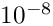, as defined in theIterativeLinearSolverbase class.
- Explore the behaviour of preconditioner(s)
The shell script steady_precond.bash may be used to explore the performance of the various FSI preconditioners. It solves the monolithically-discretised, steady fluid-structure interaction problem described in Heil, Hazel & Boyle's (2008) paper with a variety of solver/preconditioner combinations:
- The direct solver,
SuperLUSolver.
GMRES, with the three FSI preconditioners 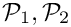 or , discussed above, using various (sub-)solver combinations (SuperLUSolveror (if available)Hypre) for the solution of linear (sub-)systems.
- GMRES with various "sanity-check" preconditioners:
- The
ExactFSIPreconditioner:A preconditioner formed from the full Jacobian matrix by re-arranging the entries into the appropriate block structure. This is an exact preconditioner (and its application is therefore just as costly as a direct solve) and leads to GMRES convergence in a single iteration.
- The
SimpleFSIPreconditioner:A preconditioner that uses the block-triangular matrices or , stored as full matrices (i.e. without performing any block elimination).
- The
- The direct solver,
- Explore the FSI preconditioner in other problems
The FSI preconditioner is also used in the driver codes for other demo problems:
Source files for this tutorial
- The source files for this tutorial are located in the directory:
demo_drivers/interaction/fsi_channel_seg_and_precond
- The driver code is:
demo_drivers/interaction/fsi_channel_seg_and_precond/fsi_chan_precond_driver.cc
PDF file
A pdf version of this document is available.